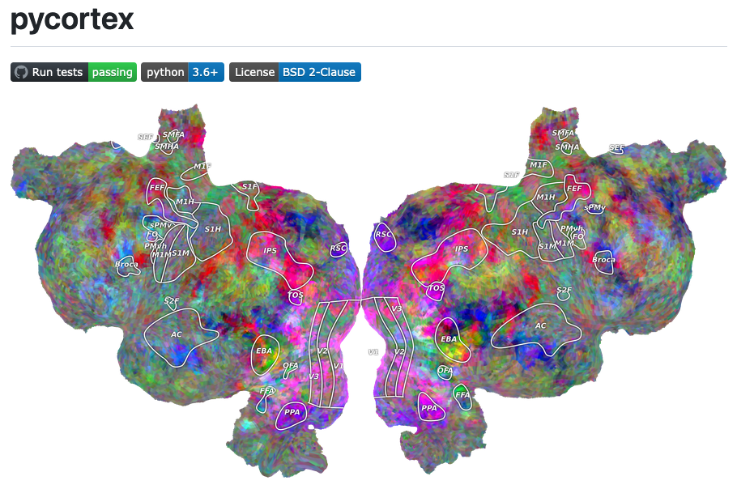
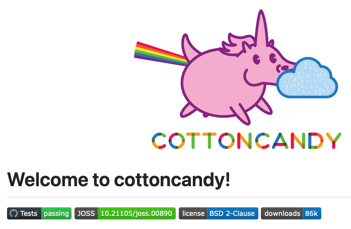
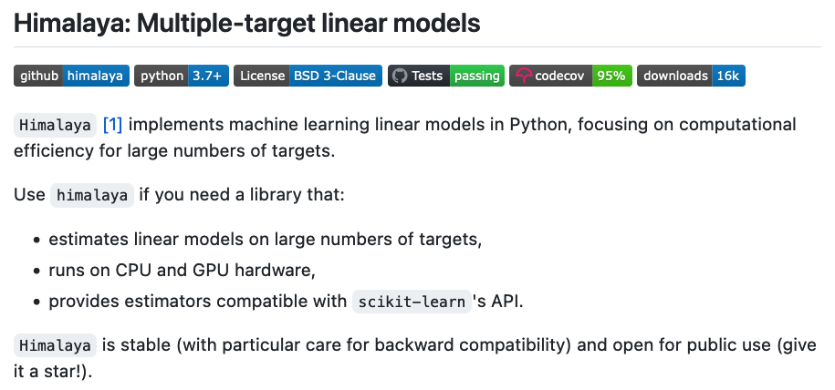

OpenCode
|  | Pycortex interactive brain viewer. Pycortex is a python-based toolkit for surface visualization of fMRI data. (It can also be used to visualize other types of volumetric brain data.) The brain viewers on this site were all generated using Pycortex. The 2015 publication describing Pycortex can be found here. |
|  | CottonCandy, syntactic sugar for S3. A scientific library for storing and accessing numpy array data on an S3-compatible cloud storage instance. This is achieved by reading arrays from memory and downloading arrays directly into memory. This means that you don't have to download your array to disk, and then load it from disk into your python session. A paper describing CottonCandy was published in 2018. |
|  | Himalaya linear(ized) modeling package. Himalaya implements machine learning linear(ized) models in Python, focusing on computational efficiency for large numbers of targets. Himalaya efficiently estimates linear(ized) models on large numbers of targets (for example, thousands of voxels in an fMRI experiment), it runs on both CPU and GPU hardware, and it provides estimators that are compatible with scikit-learn's API. Himalaya is routinely used in our lab to fit voxelwise encoding models to very large fMRI data sets. The 2022 publication describing Himalaya is at this link. |
Voxelwise modeling tutorials. Voxelwise modeling is a framework for fitting linear(ized) encoding models to functional magnetic resonance imaging (fMRI) datasets. Voxelwise modeling can produce high-resolution, high-dimensional functional brain maps in single individuals, while minimizing problems due to Type 1 and Type 2 error that are common in other approaches to fMRI data analysis. |